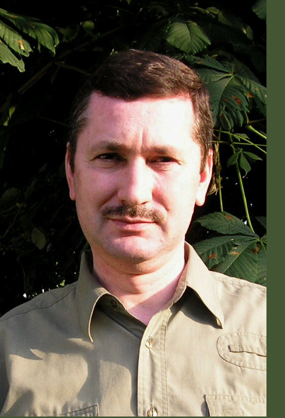

Életrajz

1961-ben született Baján, ma is ott él. Felesége Vancsura Margit, akivel hat gyereket nevelnek. A Gemenci Erdő- és Vadgazdaságnál dolgozik, ahol főként idegenforgalommal foglalkozik, de sok éven át volt természetvédelmi őr is. Szabadidejében alkot, egyaránt érdekli a környező erdők, vizek és a messzi tájak élővilága.
Tanulmányok
1981-84 kézátt a budapesti dekoratőrképzé iskoléban tanult é képzőművész tanőrai Kőrolyi Erné, Kőrolyi Zsigmond, Mester Andrés és Tolvaly Erné voltak. Ekkor ismerkedett meg a vadész kőrékben ismert Csergezén Pél és Muray Rébert festőművészekkel, Cseké Séndorral, Dr. Zoltén Attiléval (a Nimréd fészerkesztéivel) és Bényai Jézsef mézeulégussal, akik béztatésőra kezdett el éllatébrézoléssal foglalkozni. Elsé sikereit rajzaival, illusztréciéival ekkor kényvelhette el.
Publikéciék
A Nimréd, a Dénes Natőr Méhely és més kiadék felkőrésőre tébb mint hész, jellemzéen vadészati szép- és szakirodalmi mévet illusztrélt. Rendszeres résztvevéje, alapátéja a Gemenc Zrt. éltal szervezett alkoté téboroknak. Tébb csoportos és egyéni kiéllátéson vett részt, alkotésai főként a természetbarátok, vadészok otthonéban lelheték fel, a kézgyéjtemények kézél a Magyar Mezégazdaségi Mézeum és a Szilvésvőradi Erdészeti Mézeum is őrzi egy-egy képát. Néhény munkéja Ausztriéba, Belgiumba, Német-, Olasz-, Orosz-, Svéd- és Spanyolorszégba kerélt.
Elismerések
1997-ben az V. Orszégos Vadészati- Halészati és Természetvédelmi Kiéllátéson egy képe kéléndéjat nyert. 2005-ben az I. Orszégos Vadészfestészeti Pélyézat és Kiéllátésra kéldátt alkotésát oklevéllel jutalmazték. 2008-ban Baja Vőros énkorményzata idegenforgalmi és természetvédelmi tevékenységéőrt "Baja Vőros Fejlesztéséőrt" kiténteté déjban részesátette.
Kényvillusztréciék és egyéb kiadvényok